Efficient Rendering of Layered Materials
using an Atomic Decomposition with Statistical Operators
Last Year ...
Rendered in Unity
Last Year ...
- Rendering thin-film iridescence
- Using a clear-coat plugin in Mitsuba
- But no clear-coat available in Unity 😭
- I wanted to show the beetle live
- One solution: code one in time!
- Turn out we can do much more
- Multiple rough interfaces
- Energy conservation
- ...
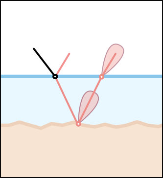
Layered Materials
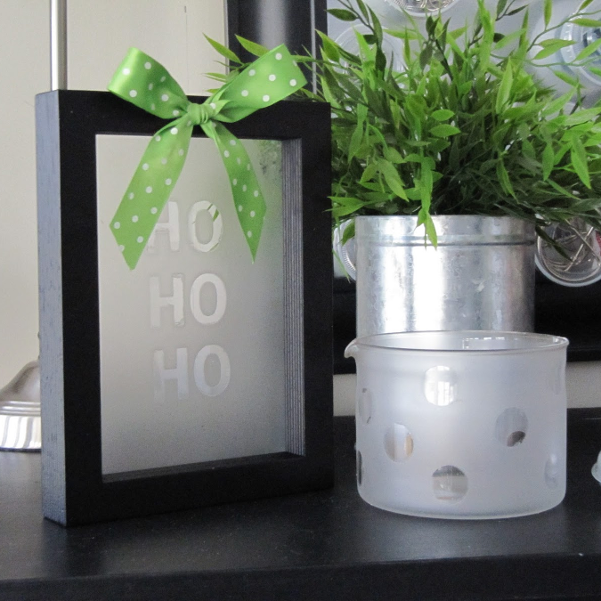
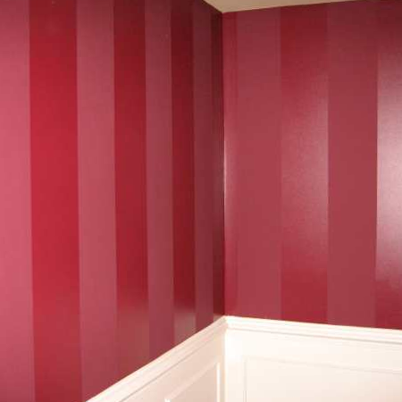
Layered Materials
$\boldsymbol{\omega}_i$
$\boldsymbol{\omega}_o$
Layered Materials
- Brute-force rendering is not possible
- At least not in real-time graphics
- Precomputation is not statisfactory
- Forbid to use textured assets
- Memory limitation on GPUs
- Our solution: tight approximation
Our Idea: Sum of GGX Lobes
$\mathbf{\omega}_i$
$\mathbf{n}$
$$\rho(\mathbf{\omega}_i, \mathbf{\omega}_o) = \sum_{k} w_k \, \rho_k(\mathbf{\omega}_i, \mathbf{\omega}_o)$$
Statistical Analysis: Mapping
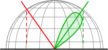
- We study BSDF statistics
- In the orthographicaly projected disc
- There, GGX is almost rotationaly symmetric
Orthographic projection
GGX lobe with $\alpha = 0.01$
Statistical Analysis: Mapping
- We study BSDF statistics
- In the orthographicaly projected disc
- There, GGX is almost rotationaly symmetric
- To find a mapping
- From the three moments (energy, mean, variance)
- To a BRDF lobe parameters (albedo, view, roughness)
Orthographic projection
Equivalent Statistics
$\mathbf{\omega}_i$
$(e, \mathbf{\mu}, \sigma)$
Statistical Analysis: Mapping
- We study BSDF statistics
- In the orthographicaly projected disc
- There, GGX is almost rotationaly symmetric
- To find a mapping
- From the three moments (energy, mean, variance)
- To a BRDF lobe parameters (albedo, view, roughness)
- Can we find the statistics of layered materials?
Statistical Analysis: Framework
- Infer statistics atomically
- Details in the paper
- Update $e$, $\mu$, and $\sigma$
-
Example: refraction operator
-
Shift, scales and convolves the incident lobe
$$
e_t = \tilde{\mbox{F}} \, e_i
$$
$$
\mu_t = - \eta_{12} \, \mu_i
$$
$$
\sigma_t = \eta_{12} \, \color{blue}{\sigma_i} + \color{red}{s}
$$
Reflection
Refraction
Scattering
Statistical Analysis: Validation
- Interactively testing atomic operators
Statistical Analysis: Framework
- Multiple layers: chain operators
Statistical Analysis: Framework
$(e_1, \mu_1, \sigma_1)$
$(e, \mu, \sigma)$
$(e, \mu, \sigma) = \left(e_1+e_2, \mu, \dfrac{e_1}{e}\sigma_1+\dfrac{e_2}{e}\sigma_2\right)$
$(e_2, \mu_2, \sigma_2)$
$+$
Statistical Analysis: Framework
- Merging statistics
- Multiple scattering
- Closed-form statistics
- Arithmetico-Geometric series
Statistical Analysis: Framework
- Merging statistics
- Multiple scattering
- Closed-form statistics
- Arithmetico-Geometric series
- Adding-Doubling
Offline Validation
- Mitsuba renderer
- Both opaque and transparent plugins
- Varying number of textured layers
- Multiple Importance Sampling with the lobes
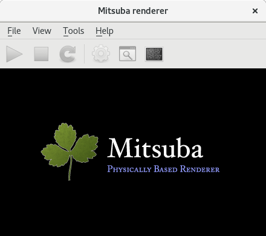
Offline Validation
- Mitsuba renderer
- Comparison with stochastic reference
|
|
|
|
| Metal foil |
Rough metal |
Gold Coated |
Offline Validation
- Mitsuba renderer
- Comparison with stochastic reference
- Layered method of Weidlich & Wilkie [2007]
Offline Validation
- Mitsuba renderer
- Comparison with stochastic reference
- Layered method of Weidlich & Wilkie [2007]
- Multiple scattering
| 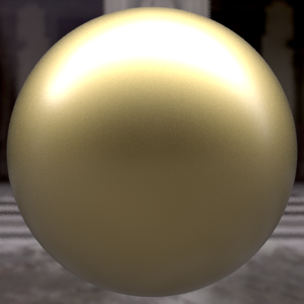 |
|
|
$R + TRT$ |
$R + TR^+T$ |
Ours |
Offline Results: Textures
|
|
|
| Textured base $\alpha$ |
Textured top $\eta$ |
Textured top $\alpha$ |
Offline Results: Robot Bust
- Two layer configuration
- Multiple textured layers
- Base and top Index of Refraction
- Top roughness
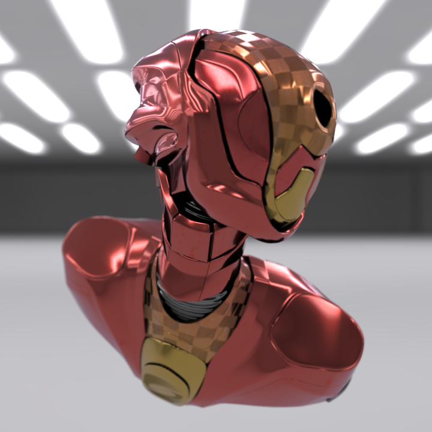
Offline Results: Robot Bust
Offline Results: Dragon
- Gold metal dragon
- Adding a medium layer
- Simulate dust
- Increase the haze
Real-Time Results in Unity
Limitations: High Roughnesses
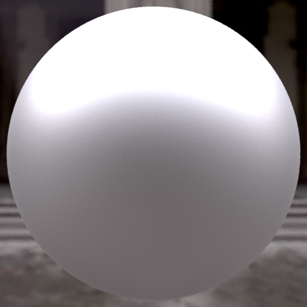
$\alpha = 0.3$
Ours
Reference
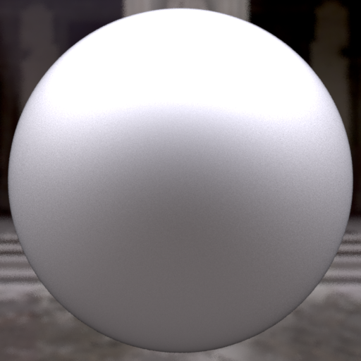
$\alpha = 0.6$
Ours
Reference
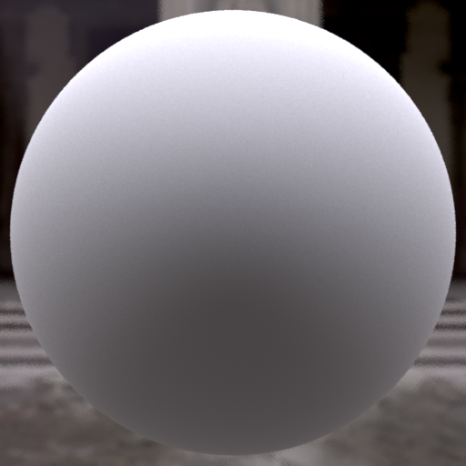
$\alpha = 0.9$
Ours
Reference
Summary
- A novel BSDF model for layered structures
- Accurate for low roughnesses
- Accounts from multiple scattering
- No parameter dependent precomputation
- Compatible with real-time scenario
- Our contributions
- Statistical analysis of light transport in layers
- New adding-doubling scheme for variance
Thank you for your attention
| 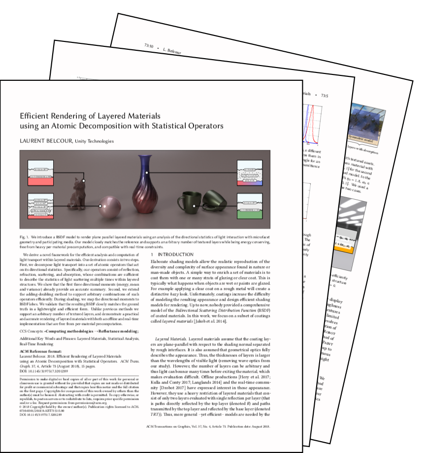 |
|
|
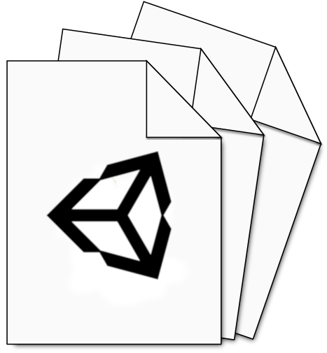 |
| paper |
supp. mat. |
code |
HDRP StackLit |
available at belcour.github.io/blog